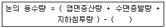
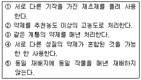

식물보호기사 (2005-05-29 기출문제)
1과목: 식물병리학
1. 발병억제토양이 가지고 있는 발병 억제력의 가장 주된 실체는?
- 무기염류
- 토양의 물리성
- 길항균
- 토양의 종류
(정답률: 89%)

2. 사람이나 가축에 독작용을 나타내는 식물병원균은?
- Gibberella fujikuroi
- Ustilago nuda
- Claviceps purpurea
- Glomerella cingulata
(정답률: 60%)
3. 오이 노균병의 설명 중 틀리는 내용은?
- 병반 특징이 부정형 다각형이다.
- 발아할 때 유주자를 형성한다.
- 주로 포장이나 하우스 청결이 급선무이다.
- 고온 건조시 격발한다.
(정답률: 69%)
4. 다음 중 식물병과 제 1차전염원이 바르게 짝지워진 것은?
- 벼 도열병 - 잡초
- 배나무 검은별무늬병 - 종자
- 벼 흰잎마름병 - 잡초
- 담배모자이크바이러스병 - 곤충
(정답률: 36%)
5. 토마토 잎곰팡이병 방제방법으로 맞지 않는 내용은?
- 저항성 품종선택
- 종자소독 철저
- 밀식하여 도복 방지
- 약제로는 triflumizole, triforine 등이 있다.
(정답률: 79%)
6. 형광항체법을 이용하는 식물병 진단방법은?
- 핵산분석에 의한 진단
- 이화학적 진단
- 혈청학적 진단
- 생물학적 진단
(정답률: 83%)
7. 다음 중 나머지 셋과 다른 의미를 가지고 있는 것은?
- 수평저항성
- 미동유전자저항성
- 비분화적저항성
- 소수인자저항성
(정답률: 49%)
8. 잣나무 털녹병균의 중간 기주는?
- 까치밥나무
- 배나무
- 참나무
- 향나무
(정답률: 69%)
9. 고추 열매에 검은색의 작은 알갱이들이 동심윤문을 그리며 만들어지고, 습도가 높을 때 그 위에 분홍색 계통의 점액이 분비되는 병은?
- 역병
- 탄저병
- 더뎅이병
- 깨씨무늬병
(정답률: 75%)
10. 포도나무 새눈무늬병(흑두병)균의 월동상태는?
- 담자포자
- 균핵
- 후막포자
- 균사
(정답률: 45%)
11. 벼 오갈병을 매개하는 곤충으로만 된 것은?
- 벼멸구 - 애멸구
- 애멸구 - 끝동매미충
- 진딧물 - 멸구류
- 끝동매미충 - 번개매미충
(정답률: 71%)
12. 저장 중의 감자가 썩어서 병원균을 Gram 염색하여 본 결과 Gram 양성이었다. 본 병균은 무엇인가?
- Clavibacter michiganensis subsp. sepedonicus
- Ralstonia solanacearum
- Erwinia carotovora
- Xanthomonas campestris
(정답률: 72%)
13. 담배 모자이크병 바이러스의 생물학적 진단에 쓰이는 지표 식물은?
- 참깨의 어떤 품종
- 목화의 어떤 품종
- 귀리의 어떤 품종
- 강남콩의 어떤 품종
(정답률: 42%)
14. 배나무 검은무늬병의 기주특이적 독소는?
- Alternaria kikuchiana (AK-독소)
- Alternaria mali (AM-독소)
- Alternaria alternata (AF-독소)
- Alternaria longipes (AT-독소)
(정답률: 69%)
15. 배추 무사마귀병의 방제법과 거리가 가장 먼 것은?
- 경종적 방제법으로 배수가 잘 되게 한다.
- 윤작을 한다.
- 토양산도를 조절하여 pH를 낮춰 준다.
- PCNB, Fluazinam 등을 살포한다.
(정답률: 66%)
16. 감자 역병균의 학명은?
- Phytophthora infestans
- Plasmopara viticola
- Peronospora brassicae
- Alternaria solani
(정답률: 63%)
17. 사과나무 근두암종병의 발병유인과 방제법을 설명한 것으로 틀린 것은?
- 전형적인 토양전염성 담자균에 속한다.
- 건전묘목 선발 및 식재가 요구된다.
- 무병지 포장으로 선발한다.
- 감나무, 밤나무 등 지표식물을 심어 발병 유무 확인 후 식재한다.
(정답률: 46%)
18. 병원이 파이토플라스마가 아닌 병은?
- 배추 무사마귀병
- 오동나무 빗자루병
- 대추나무 빗자루병
- 뽕나무 오갈병
(정답률: 77%)
19. 벼 흰잎마름병의 방제법으로 거리가 가장 먼 것은?
- 저항성 품종을 재배한다.
- 질소비료를 많이 주어 식물체를 과번무시킨다.
- 논둑의 잡초를 제거한다.
- 발생시 phenazine을 살포한다.
(정답률: 82%)
20. 초승달 모양의 대형 분생포자를 형성하는 병원균은?
- 벼 도열병균
- 벼 흰잎마름병균
- 벼 키다리병균
- 벼 오갈병균
(정답률: 75%)
2과목: 농림해충학
21. 다음 중 해충과 천적이 가장 부적절하게 연결된 것은?
- 꽃노랑총채벌레 - 애꽃노린재류
- 목화진딧물 - 콜레마니진딧벌
- 애멸구 - 칠성풀잠자리붙이
- 점박이응애 - 칠레이리응애
(정답률: 56%)
22. 살충제를 살포하여 해충을 방제하려고 한다. 다음 중 어느 시기에 방제하여야 하는가?
- 경제적피해허용밀도에 도달시
- 경제적가해수준에 도달시
- 일반평형밀도에 도달시
- 해충이 눈에 보이는 시기
(정답률: 75%)
23. 곤충의 외부구조를 설명한 것으로 틀린 것은?
- 곤충의 몸은 여러개의 마디로 이루어졌으며 머리, 배, 가슴로 구분된다.
- 존스턴기관은 더듬이 끝마디인 채찍마디에 있다.
- 더듬이의 기본 구조는 3부분으로 되어 있다.
- 겹눈은 여러개의 낱눈이 모여 이루어져 있다.
(정답률: 75%)
24. 일반적인 곤충의 소화계 중 전장에 속하는 소화계는?
- 모이주머니(crop)
- 위(ventriculus)
- 말피기관
- 위맹낭(gastric caecum)
(정답률: 66%)
25. 해충의 발생예찰 방법 중 틀린 것은?
- 물리적 방법
- 통계적 방법
- 실험적 방법
- 야외조사 및 관찰에 의한 방법
(정답률: 65%)
26. 하우스 딸기의 종합적 해충관리를 위한 방법으로 적합지 않은 것은?
- 점박이응애 밀도 억제를 위해 포식성응애를 투입한다.
- 진딧물은 번식이 빠르므로 발생여부에 관계없이 정식이 후 주기적으로 살충제를 살포한다.
- 총채벌레는 꽃과 어린 열매를 주기적으로 관찰하여 발생여부를 확인한다.
- 개화 후 꿀벌이 방화활동시 살충제 사용을 자제한다.
(정답률: 76%)
27. 야행성 곤충의 활동주기에 가장 큰 영향을 주는 요인은?
- 지온
- 광선
- 습도
- 온도
(정답률: 80%)
28. 다음 진딧물의 생식방법을 기술한 것 중 옳은 것은?
- 단위생식에 의한 난생
- 양성생식에 의한 난생
- 단위생식에 의한 태생과 양성생식에 의한 난생
- 양성생식에 의한 태생
(정답률: 81%)
29. 곤충은 부적합한 환경조건이 되면 발육을 일시 정지하고 휴면을 한다. 다음 중 휴면을 유발시키는 요인이 아닌 것은?
- 일장
- 온도
- 먹이
- 습도
(정답률: 54%)
30. 곤충의 대사작용에 관한 설명 중 내용이 틀린 것은?
- 대부분의 영양분은 단당류, 아미노산, 지방산의 형태로 흡수된다.
- 지방체는 주로 지방세포로 이루어져 있다.
- 탄수화물은 주로 trehalose 형태로 지방체내에 저장된다.
- 지방은 주로 triglyceride의 형태로 저장된다.
(정답률: 44%)
31. 4령충을 알맞게 설명한 것은?
- 3회 탈피를 한 유충
- 4회 탈피를 한 유충
- 3회 탈피중인 유충
- 5회 탈피를 한 유충
(정답률: 83%)
32. 성충과 유충이 모두 잎을 가해하는 해충은?
- 오리나무잎벌레
- 미국흰불나방
- 솔잎혹파리
- 매미나방
(정답률: 78%)
33. 곤충은 대부분 2쌍의 날개를 가지고 있다. 뒷날개가 주걱 모양으로 퇴화되어 앞날개 1쌍만을 가지고 비행하는 이 곤충은?
- 파리목
- 매미목
- 노린재목
- 딱정벌레목
(정답률: 75%)
34. 어떤 곤충이 잠재적 포식자와 마주쳤을 때 방출하는 방어 물질은 어느 것인가?
- 페로몬
- 카이로몬
- 알로몬
- 알라타체호르몬
(정답률: 55%)
35. 복숭아혹진딧물에 대한 설명으로 적당치 않은 것은?
- 무궁화나무가 월동기주다.
- 온실내에서는 년중 휴면 없이 발생한다.
- 고추의 주요해충이다.
- 식물 바이러스를 매개한다.
(정답률: 42%)
36. 해충 조사법 중 잘못 연결된 것은?
- 황색수반 - 진딧물, 애멸구
- 페로몬트랩 - 사과잎말이나방류
- 유아등 - 이화명나방
- 공중포충망 - 톡톡이
(정답률: 69%)
37. 우리나라에서 월동을 하는 해충은?
- 애멸구
- 벼멸구
- 흰등멸구
- 혹명나방
(정답률: 74%)
38. 산림해충의 화학적 방제법 중 천적에 미치는 영향이 상대적으로 적은 방법은?
- 수간주사
- 항공살포
- 지면살포
- 수관살포
(정답률: 68%)
39. 기계유(機械油) 유제(乳劑)의 작용특성을 알맞게 설명한 것은?
- 식독제로서 위에서 소화중독되어 치사된다.
- 신경에 작용하여 이상흥분을 일으켜 치사된다.
- 직접 접촉제로서 곤충체 표면에 피막을 형성하여 기문이나 기관을 막아 질식사 시킨다.
- 침투성 살충제로서 작용점인 원형질에 도달하여 에너지 생성계의 효소에 저해작용을 하여 치사시킨다.
(정답률: 83%)
40. 다음 곤충의 배설계에 관한 설명 중 잘못된 것은?
- 지상곤충은 주로 질소대사산물을 암모니아태로 배설 한다.
- 말피기관 밑부와 직장은 물과 무기이온을 재흡수하여 조직내의 삼투압을 조절한다.
- 말피기관의 끝은 막혀 있다.
- 말피기관은 중장과 후장의 접속부분에서 후장에 연결되어 있다.
(정답률: 72%)
3과목: 재배학원론
41. 다음 중 연작시 작물과 토양전염의 병해와의 짝이 잘못된것은?
- 인삼 - 뿌리썩음병
- 수박 - 덩굴쪼김병
- 호박 - 탄저병
- 가지 - 풋마름병
(정답률: 62%)
42. 좌지현상(hivernalization)을 볼 수 있는 경우는?
- 봄보리를 가을에 파종
- 봄보리를 봄에 파종
- 가을보리를 가을에 파종
- 가을보리를 봄에 파종
(정답률: 66%)
43. 목초의 하고현상을 일으키는 유인(誘因)은?
- 저온
- 건조
- 단일
- 이른 봄의 방목
(정답률: 58%)
44. 감자, 양파의 경우 발아를 억제시키는 방법으로 가장 옳은 것은?
- 습도 조절
- 온도 조절
- 광선 조절
- 산소 조절
(정답률: 48%)
45. 합성 품종에 대하여 잘못 기술한 것은?
- 우수한 합성품종은 5∼8개의 우량한 자식계를 조합한다
- 다계교잡의 후대를 품종으로 이용한다.
- 세대가 진전됨에 따라 생산력이 저하한다.
- 단교잡 품종을 많이 이용한다.
(정답률: 32%)
46. 작물 품종의 잡종강세에 대하여 옳게 기술한 것은?
- 양친 식물보다 자식 식물의 생육세가 작다.
- 양친 식물보다 자식 식물의 생육세가 크다.
- 양친 식물과 자식 식물의 생육세가 같다.
- 벼와 밀과 같은 작물에서 많이 발생한다.
(정답률: 76%)
47. 종자갱신(種子更新)의 채종체계로 맞는 것은?
- 기본식물포 - 원원종포 - 원종포 - 채종포 - 농가포장
- 원원종포 - 기본식물포 - 원종포 - 채종포 - 농가포장
- 원종포 - 기본식물포 - 원원종포 - 채종포 - 농가포장
- 채종포 - 기본식물포 - 원종포 - 원원종포 - 농가포장
(정답률: 78%)
48. 벼의 생육단계에서 냉해에 가장 약한 시기는?
- 묘대기
- 활착기
- 생식세포 감수분열기
- 유숙기
(정답률: 71%)
49. 연작 장해가 가장 큰 작물은?
- 옥수수
- 고구마
- 호박
- 아마
(정답률: 61%)
50. 노후화답(老朽化畓)의 재배대책으로 가장 효과가 적다고 인정되는 것은?
- 조기재배(早期栽培)
- 황산근비료(黃酸根肥料)의 시비
- 추비(追肥)중점 시비
- 엽면시비(葉面施肥)
(정답률: 58%)
51. 다음의 수식에서 ( )에 해당되는 것은?

- 강수량
- 강우량
- 유효우량
- 흡수량
(정답률: 62%)
52. 토양산성화 원인 중 미포화교질(unsaturated colloid)과 관계 깊은 것은?
- H+가 흡착된 것
- Ca++가 흡착된 것
- Mg++가 흡착된 것
- K+가 흡착된 것
(정답률: 60%)
53. 자가불화합성을 보이는 작물은?
- 벼
- 밀
- 배추
- 감자
(정답률: 60%)
54. 식물의 굴광현상에 가장 유효한 광파장은?
- 350nm
- 450nm
- 550nm
- 650nm
(정답률: 62%)
55. 재배적 견지에서 유전형질이 균일하고 영속적인 개체들의 집단을 일컫는 것은?
- 종(種)
- 아종(亞種)
- 변종(變種)
- 품종(品種)
(정답률: 62%)
56. 병충해 방제에 있어서 경종적 방제법이 아닌 것은?
- 품종의 선택
- 윤작
- 생육기의 조절
- 나방 등의 유살
(정답률: 86%)
57. 작물의 내건성에 대하여 옳게 기술한 것은?
- 내건성이 큰 작물은 뿌리가 표층에 많이 분포한다.
- 내건성이 큰 작물은 왜소하고 잎이 작다.
- 내건성이 큰 식물은 세포액의 삼투압이 낮다.
- 내건성이 큰 식물은 세포가 크다.
(정답률: 67%)
58. 윤작을 하면 어떤 병을 방제할 수 있는가?
- 종자전염성병
- 토양전염성병
- 공기전염성병
- 접촉전염성병
(정답률: 78%)
59. 벼재배에서 이삭거름의 시용적기는?
- 유효분얼기
- 유수형성기
- 감수분열기
- 출수개화기
(정답률: 53%)
60. 같은 벼품종의 쌀이라도 평야지 보다 산간지에서 생산된 것이 더욱 잘 여물어서 밥맛이 좋다고 한다. 가장 주된 이유는?
- 밤낮의 기온 격차가 크기 때문
- 날씨가 좋기 때문
- 논토양이 비옥하지 못하기 때문
- 대주는 논물이 차기 때문
(정답률: 78%)
4과목: 농약학
61. 농약의 약효보증기간 동안 유효성분의 분해를 방지 또는 억제하기 위하여 첨가되는 물질은?
- Fenclorim
- Oxabentrinil
- Epichlorohydrin
- Metolachlor
(정답률: 64%)
62. 해충의 신체 골격을 이루는 키틴(chitin) 생합성을 저해하여 살충작용을 나타내는 것은?
- 파라치온(parathion)
- 주론(diflubenzuron)
- 디디티(DDT)
- 델타린(deltamethrin)
(정답률: 47%)
63. 45% 의 EPN 유제(비중 1.0) 200㏄를 0.3% 로 희석하는데 소요되는 물의 양은?
- 29,800㏄
- 28,700㏄
- 27,600㏄
- 26,500㏄
(정답률: 49%)
64. 유기인제 중독에 대한 설명으로 가장 거리가 먼 것은?
- 유기인제는 강력한 Choline - esterase (ChE)의 활성제가 된다.
- 유기인제의 중독증상은 혈액중의 ChE 의 활성치와 밀접한 관계가 있다.
- 중독증상은 경할 때는 구토 및 복통을 나타내며 중할 때는 땀을 많이 흘린다.
- 치료법은 경할 때는 황산아트로핀 1族2정 복용하거나 피하주사로 한 앰플을 맞는다.
(정답률: 36%)
65. 다음 중 신경화학전달물질인 ACh를 분해하는 효소인 Acetylcholinesterase(AChE)의 활성작용을 저해하여 곤충을 죽게 하는 농약이 아닌 것은?
- 이피엔(EPN)
- 다이아지논(Diazinon)
- 메프(Mep)
- 지오릭스(Thiolix)
(정답률: 55%)
66. 농약을 희석액으로 살포에 의하지 않고 농약의 유효성분을 병충해 등 서식부위에 직접적으로 접촉하게 하는 사용방법이 아닌 것은?
- 분무법
- 훈증법
- 도포법
- 도말법
(정답률: 40%)
67. 미생물 농약의 특성이 아닌 것은?
- 약효저조
- 지효성
- 광범위 적용
- 환경중 불안정
(정답률: 50%)
68. 다음 중 훈증제가 아닌 농약은?
- 메틸브로마이드제
- 클로로피크린제
- 디코폴유제
- 시안화수소산제
(정답률: 72%)
69. 농약 제품포장지의 표기사항으로 가장 거리가 먼 것은?
- 유효성분 및 성분량
- 농약안전사용기준
- 사용방법
- 제조공정내용
(정답률: 86%)
70. 메타유제(상표명:메타시스톡스)와 혼용해도 무방한 것은?
- 밀베멕틴 유제
- 디코폴
- 그로포·주론 수화제
- 피레스 유제
(정답률: 43%)
71. 식물성 살충제로서 온혈동물(溫血動物)에는 독성이 없는 농약은?
- nicotine 제
- anabasine 제
- 송지합제
- pyrethrin 제
(정답률: 72%)
72. 식물생장 억제제로서 낙과 방지제가 될 수 있는 것은?
- MH제(Maleic hydrazide)
- β- 인돌초산(β-indole acetic acid)
- 콜히친(Colchicine)
- 비나인(B-nine)
(정답률: 25%)
73. 다음 농약 중 그 작용 주체가 수은인 것은?
- Nabam
- Zineb
- PMA
- PCP
(정답률: 36%)
74. 농약의 사용기구에 대한 설명으로 가장 거리가 먼 것은?
- 미스트기(mist spray)는 풍압으로 미립자를 만든 후 다량의 바람으로 불어 붙이는 기기이다.
- 스프링클러 ( sprinkler ) 는 관수·시비등을 포함 다목적으로 사용되는 기기이다.
- 폼스프레이(foam spray)는 살포액에 기포제를 가하여 전용 노즐로 공기와 교반 하는 거품의 집합체로 살포 하는 기기이다.
- 살입기(granule applicator)는 분제농약을 작업상의 안정성이나 능율면에서 고르게 살포하기 위한 기기이다.
(정답률: 70%)
75. 농약 제형 중 직접 살포제가 아닌 것은?
- 세립제
- 미립제
- 유탁제
- 미분제
(정답률: 57%)
76. 다음 중 살선충제가 아닌 것은?
- 다조메(dazomet)
- 포스치아제이트(fosthiazate)
- 에토프(ethoprophos)
- 지오판(thiophanate-methyl)
(정답률: 44%)
77. 입상수화제 제형에 대한 설명으로 옳지 않은 것은?
- 수화제의 문제점을 보완한 제형이다.
- 입상의 담체에 유효성분을 피복시켜 제조한 제형이다.
- 환경친화적인 제형이다.
- 인화성과 폭발성이 없어 이화학적으로 안정하다.
(정답률: 46%)
78. Zineb 제는 다음 중 어떤 화합물 인가?
- triphenyl 주석 화합물
- pentachloro - phenol 계 화합물
- phosphoro - thiolate 계 화합물
- alkylene - diamine 계 화합물
(정답률: 39%)
79. 농약의 입제(粒劑)에 대한 설명으로 옳지 않은 것은?
- 제조과정이 다른 제형보다 간단하고 값이 저렴하다.
- 살포가 용이하고 환경오염이 적다.
- 입자가 크므로 농약을 살포하는 농민에 대하여 안전성이 높다.
- 토양 흡착성이 크고 물에 쉽게 유실되지 않는다.
(정답률: 59%)
80. 12% 다수진분제 1㎏ 을 2% 다수진분제로 만들려면 소요 되는 증량제의 양은?
- 5㎏
- 10㎏
- 15㎏
- 20㎏
(정답률: 62%)
5과목: 잡초방제학
81. 영양번식 기관이 괴경(塊莖)이 아닌 다년생잡초는?
- 벗풀
- 쇠털골
- 올미
- 올방개
(정답률: 48%)
82. 방제 측면에서 잡초문제는 병, 해충문제와는 차이가 있다. 다음 중 잡초문제에 해당되지 않는 것은?
- 잡초는 진전성이 완만하다.
- 잡초의 방제 개념은 박멸이다.
- 잡초는 가해 특성이 생산 활동 억제이다.
- 잡초의 피해 판단 근거는 허용한계 수준이다.
(정답률: 73%)
83. 식물의 경합 중 가장 피해가 큰 경합은?
- 종간경합
- 종내경합
- 속간경합
- 이종경합
(정답률: 58%)
84. 종자 자체의 조성이나 구조에 기인하여 발아하지 못하는 경우의 휴면을 무엇이라 하는가?
- 강제휴면
- 타발휴면
- 2차휴면
- 생득휴면
(정답률: 60%)
85. 잡초의 유용성에 대해 해당되지 않는 것은?
- 지면을 덮어서 침식을 막아준다.
- 유전공학분야의 식물재료로 쓰일 수 있다.
- 기능성물질을 얻을 수 있다.
- 병해충의 번식처를 제공함으로서 작물수량증진과 농업 생태계 보전에 큰 기여를 한다.
(정답률: 79%)
86. 다음 잡초 중 암발아 잡초종은?
- 광대나물
- 바랭이
- 소리쟁이
- 쇠비름
(정답률: 74%)
87. 피의 형태적 특징 중 옳은 것은?
- 엽설(葉舌:잎혀)은 없고, 엽이(葉耳:잎귀)는 있다.
- 엽설(葉舌:잎혀)은 있고, 엽이(葉耳:잎귀)는 없다.
- 엽설(葉舌:잎혀)과 엽이(葉耳:잎귀) 모두 있다.
- 엽설(葉舌:잎혀)과 엽이(葉耳:잎귀) 모두 없다.
(정답률: 74%)
88. 2.4-D의 작용 특성을 설명한 것 중 잘못된 것은?
- 호르몬형의 선택 살초성이다.
- 이행형 제초제이다.
- 분열조직을 활성화하여 생리기구를 교란시켜 고사한다.
- 벼의 무효 분얼을 증가시킨다.
(정답률: 60%)
89. 포장에서 제초제 저항성 잡초 유발을 낮추기 위하여 농민들이 노력해야 할 일들 중 적합한 것으로만 묶여진 것은?

- ①, ②, ③
- ①, ③, ④
- ①, ④, ⑤
- ②, ④, ⑤
(정답률: 81%)
90. 다음 논잡초 중에서 부유성잡초는?
- 가래
- 네가래
- 생이가래
- 물달개비
(정답률: 67%)
91. 여름 작물 밭에 발생하는 우점초종은?
- 뚝새풀
- 깨풀
- 벼룩나물
- 별꽃
(정답률: 58%)
92. 두 종류의 제초제를 혼합처리시의 반응이 단독처리시의 큰쪽의 반응보다 작을 때 두 약제간에는 어떤 작용이 있다고 하는가?
- 상승작용
- 상가작용
- 길항작용
- 독립작용
(정답률: 67%)
93. 잡초에 대한 벼의 경합력을 높이는 재배 방법은?
- 소식재배를 한다.
- 직파재배를 한다.
- 이앙 재배를 한다.
- 무경운 재배를 한다.
(정답률: 75%)
94. 같은 조건하에서도 일시적으로 발아를 중지하고 휴면의 형태를 취하여 부적격 환경을 극복하려는 종자의 발아습성을 무엇이라 하는가?
- 발아 기회성
- 발아 계절성
- 발아 주기성
- 준동시성 발아
(정답률: 21%)
95. 열처리나 침수처리 등의 잡초방제방법을 무슨 방제법이라고 하는가?
- 물리적방제법
- 예방적방제법
- 생태적방제법
- 경종적방제법
(정답률: 80%)
96. 벼와 광경합이 가장 크게 일어나는 잡초는 ？
- 강피
- 가막사리
- 바랭이
- 올미
(정답률: 80%)
97. 제초제 중에서 식물의 백화 증상을 유발시키는 약제가 있는데 이런 증상이 유도되는 이유를 올바르게 설명한 것은?
- 단백질 생합성을 저해하여 엽록체가 파괴되기 때문이다
- 식물색소 중의 하나인 카로티노이드의 생합성이 억제되기 때문이다.
- 식물세포막을 급격히 파괴시키기 때문이다.
- 광합성 전자전달과정을 저해하기 때문이다.
(정답률: 38%)
98. 종합적 방제법에 대한 설명으로 잘못된 것은?
- 제초제 약해와 환경 오염을 줄일 수 있다.
- 화학적 방제를 배제하고 생태적 방제와 예방적 방제를 주로 사용한다.
- 여러 가지 다른 방제법을 상호 협력적으로 적용하는 방식이다.
- 잡초 군락의 크기가 감소되고 작물의 생산력이 증대되는 효과가 있다.
(정답률: 79%)
99. 논제초제의 사용시 약해발생 요인으로서 맞는 것은?
- 식양토는 CEC가 높으므로 사양토보다 약해를 입기 쉽다
- 큰 묘를 내는 손이앙은 어린묘를 내는 기계이앙에 비해 약해를 입기 쉽다.
- 근부흡수형의 약제들은 천식했을 경우 약해가 커진다.
- 호르몬형 제초제는 고온보다 저온에서 약해가 커지는 경향이 있다.
(정답률: 31%)
100. 유기제초제 중 세계적으로 가장 먼저 개발된 제초제 계열은?
- 페녹시계
- 산아미드계
- 카바마이트계
- 디페닐에테르계
(정답률: 69%)